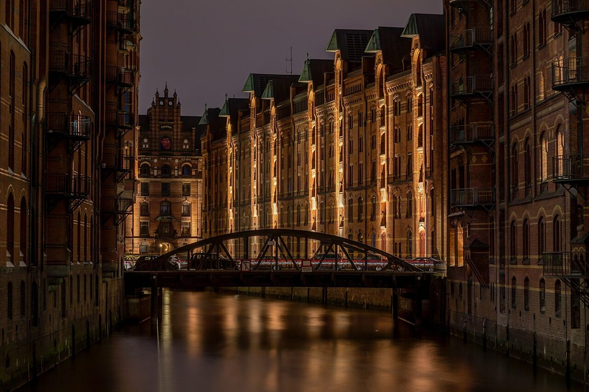

汉堡仓库城：德国红砖建筑的浪漫与历史

汉堡仓库城（Speicherstadt）是德国汉堡最独特的景观之一，这片红砖建筑群静静矗立在运河两岸，仿佛时光凝固在19世纪的贸易辉煌中。作为世界上最大的连续仓库建筑群，它不仅是联合国教科文组织世界遗产，更是汉堡人心中工业浪漫的象征。
如何到达仓库城
仓库城位于汉堡市中心，交通极为便利。从中央火车站（Hauptbahnhof）步行约15分钟即可到达，沿途还能欣赏城市街景。地铁U3线到"Baumwall"站或"Messberg"站下车最为便捷，出站后就能看到标志性的红砖建筑。如果从汉堡港方向过来，搭乘水上巴士（HADAG渡轮）是充满风情的选择，在"Speicherstadt"码头下船即可。
最佳游览时间
仓库城四季皆美，但5月至9月是最佳游览季节。夏季阳光将红砖映照得格外温暖，运河波光粼粼，许多咖啡馆会开放临水座位。冬季也别有韵味，特别是圣诞季（11月下旬至12月），仓库城会点亮温馨的灯光，圣诞市场飘着热红酒的香气。建议清晨或傍晚前来，避开游轮旅行团的高峰时段，独享宁静的红砖巷道。
不可错过的五大体验
1. 微缩景观世界（Miniatur Wunderland）
这个吉尼斯纪录保持者的铁路模型堪称奇迹，细节精致到令人屏息。从虚构的美国小镇到真实的汉堡港，微型世界昼夜交替，甚至有实时天气系统。
2. 海关博物馆（Deutsches Zollmuseum）
在真实的百年海关大楼里，了解走私奇闻和关税历史，孩子们可以体验缉毒犬的工作场景。
3. 仓库城步道（Speicherstadt Promenade）
沿着Wandrahmsfleet运河漫步，铸铁桥梁与红砖山墙倒映水中，每栋建筑门楣上都能发现19世纪商行的徽记。
4. 咖啡仓库（Kaffee Speicher）
汉堡曾是欧洲咖啡贸易中心，在这家由仓库改造的咖啡馆里，品尝来自原产地的单品咖啡，搭配传统的法兰克福蛋糕。
5. 夜晚灯光秀
当夜幕降临，数百盏装饰灯将仓库城变成童话世界，最佳观景点是Poggenmühlen桥或从易北河游船上远眺。
舌尖上的仓库城
在历史建筑中藏着不少美食宝藏："Schifferbörse"餐厅提供最地道的北海海鲜拼盘；"Vlet"的汉堡特色扁豆汤（Linsensuppe）温暖人心；甜品控不要错过"Speicherstadt Kaffeerösterei"的咖啡巧克力组合。夏季记得尝试流动摊贩的北海虾面包（Krabbenbrötchen）。
实用小贴士
• 仓库城多为石板路，建议穿舒适平底鞋
• 多数博物馆周一闭馆，提前查询
• 参加导览游能了解建筑背后的商界传奇
• 结合附近的易北爱乐厅（Elbphilharmonie）规划一日游
• 雨天时可在建筑连廊下漫步，感受别样氛围
当夕阳为红砖镀上金边，运河上货轮缓缓驶过，你会明白为什么汉堡人说：没有看过仓库城，就不算真正到过汉堡。
Haiktec
Text mit KI erstellt und automatisch geprueft.